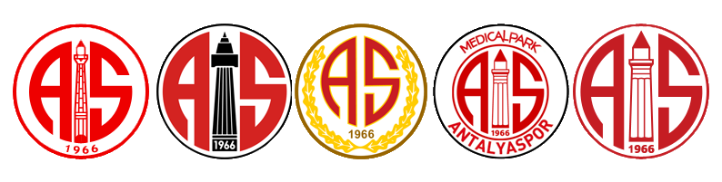
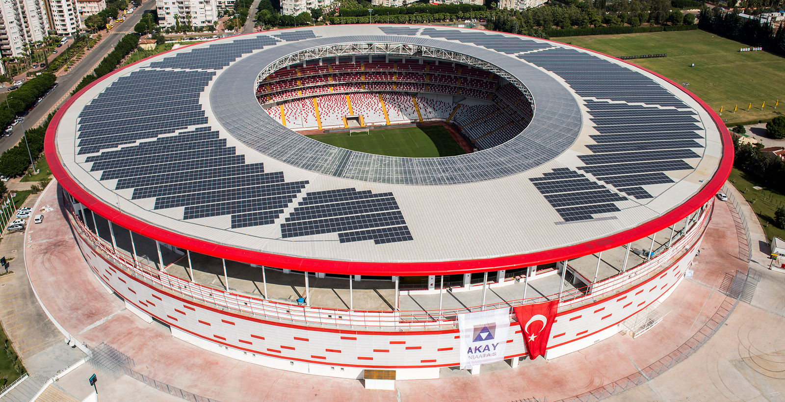

Antalyaspor Genel Bakış
Antalyaspor, çeşitli dallarda ve liglerde mücadele eden erkek futbol takımı ile tanınmış Türk spor kulübü. Antalya kentini liglerde temsil eden kulübün ilk şubesi olan futbol şubesi 2 Temmuz 1966 tarihinde kuruldu ve 11 Kasım 1966'da profesyonel liglere adım attı. Antalyaspor'un arması beyaz zemin üzerine kırmızı renkle oluşturulmuş bir çemberle çevrelenmiştir. Çemberin ortasında kırmızı renkte Antalya'nın sembollerinden Yivli Minare ve onun altında da kulübün kuruluş tarihi olan 1966 yazısı vardır. Minarenin iki yanında çemberin kenarlarıyla paralel açıda kırmızı renkli A ve S harfleri armayı tamamlar.
Antalyaspor Tarihçesi
Futbolun Türkiye'de ilgi görmeye başlaması mahalli liglerin yerini ulusal lige bırakmasına olanak sağladı ve 1959 yılında 'Millî Lig' adı altında tüm ulusu kapsaması hedeflenen futbol ligi kuruldu, ancak Millî Lig ya da bir yıl sonra değişen adıyla Türkiye Birinci Futbol Ligi genellikle İstanbul, Ankara, İzmir, Bursa ve Adana gibi büyük şehirlerin takımlarından oluşuyordu. Türkiye Futbol Federasyonu'nun 1965 yılında her ilin bir takımı olması için çıkardığı izinle Türkiye'nin çeşitli illerinde yerel liglerde mücadele eden futbol takımları birleşip şehirlerinin adına mücadeleye başladılar. Ülkedeki bu hareketlilik Antalya Beden Terbiyesi Bölge Başkanlığı Bölge İstişare Kurulunu da harekete geçirdi. 5 Haziran 1966'da Antalyaspor Kulübü'nü kurmak için bir araya gelen Yenikapı Suspor, İlk Işık ve Ferrokromspor kulüplerinin yöneticileri tüzel kişiliklerini feshederek Antalyaspor'a katıldıklarını bildirdiler. Kulübün kurucu başkanlığını Atilla Konuk üstlendi. Kısa zaman sonra ilin yerel gazetesi olan İleri Gazetesi'nde yayınlanan tüzüğün 2. maddesinde belirtilen kurucu üyelerince yönetim kurulu oluşturuldu. Antalyaspor, 2 Temmuz 1966 tarihinde bakanlık tarafından tescil edildi ve resmen kuruldu. Antalyaspor profesyonel liglere 1966-67 sezonunda Türkiye Profesyonel 2. Ligi'nden katıldı. Antalyaspor Kulübü 9 Aralık 1992'de Çimturspor Kulübü'nün Antalyaspor ile birleşme kararını onaylayarak bu kulübü de bünyesine kattı.
Antalyaspor Logosunun Zamanla Değişimi
Antalyaspor Stadı
Antalya Stadyumu ya da sponsorluk anlaşması gereği Corendon Airlines Park Antalya, Antalyaspor'un iç saha maçlarını oynadığı 29.307 kişilik koltuk kapasitesine sahip futbol stadyumu. Proje maliyeti 103 milyon lira olan Antalya Stadyumu, 200 bin metrekareden daha geniş bir alana inşa edildi. Çatısına inşa edilen 11.000 m²lik güneş panelleri sayesinde günde ortalama 7.200 kilowatt saat enerji üretebilen stadyum, 16 Eylül 2015 tarihinden bu yana kendi elektriğini üretmekte ve şehir şebekesine de elektrik vermektedir.
Antalyaspor'un Başarıları
1. Lig Şampiyonluk (2): 1981-1982, 1985-1986